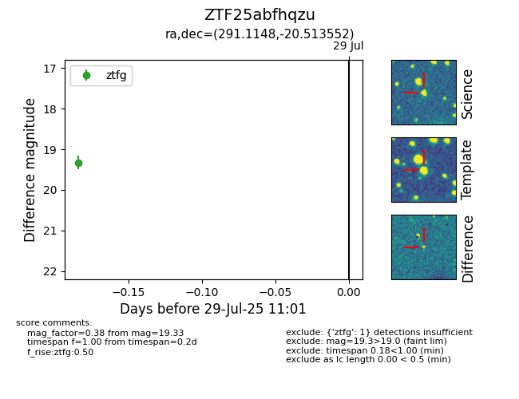

Target ZTF25abfhqzu at 2025-07-29 11:01, see:
FINK: fink-portal.org/ZTF25abfhqzu
Lasair: lasair-ztf.lsst.ac.uk/objects/ZTF25abfhqzu
ALeRCE: alerce.online/object/ZTF25abfhqzu
alt names
ZTF25abfhqzu (ztf,fink)
coordinates:
equatorial (ra, dec) = (291.1148,-20.51355)
galactic (l, b) = (17.8052,-16.22891)
photometry
last ztfg=19.33
1 ztfg detections
